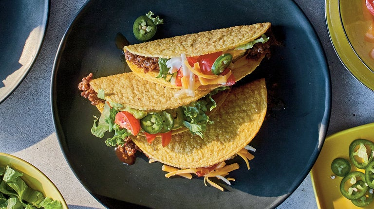

Tacos

Smell the goodness!
Here is a taste of a time when Mexican food was not as widely available in the United States as it is today, when parents and sports bars looked for food to serve children and those who eat like them, when the combination of crunch and fat and silk was divine. It still can be, if you avoid the taco kits of yore and make your own picadillo, then put it in hard-shell tacos and top how you like. For those who want to avoid prefabricated taco shells, make a form out of aluminum foil, fry fresh corn tortillas in shimmering neutral oil and then allow them to cool into shape on their aluminum saddle. Taco night. You can’t eat just two.
Ingredients:
2 tablespoons neutral oil, like canola, peanut or grapeseed
1 medium-size yellow onion, peeled and diced
4 cloves garlic, peeled and minced
2 pounds ground beef
2 tablespoons chile powder
1 tablespoon ground cumin
2 teaspoons kosher salt, or to taste
2 teaspoons freshly ground black pepper, to taste
2 teaspoons cornstarch
2 teaspoons smoked paprika (or substitute hot or sweet paprika)
1 teaspoon crushed red-pepper flakes, or to taste
1 cup chicken broth or beef broth, low-sodium if store-bought
12-18 hard taco shells
Toppings: grated cheese, sliced jalapeños, chopped tomatoes, shredded lettuce, sour cream, guacamole, etc.
Steps:
- Place a large skillet over medium-high heat, and add the oil. When it begins to shimmer, add the onion, and cook until softened and starting to brown, approximately 5 to 7 minutes.
- Add the garlic, and cook for a minute or so to soften, and then the ground beef. Cook until the beef is starting to brown, stirring and chopping with a spoon to break up the meat, approximately 5 to 7 minutes. Pour off excess fat, leaving only a tablespoon or two in the pan.
- Heat oven to 325. Add the chile powder, cumin, salt, pepper, cornstarch, paprika and red-pepper flakes, and stir to combine. Add the broth, stir, bring to a simmer and cook uncovered until the sauce has thickened slightly, approximately 4 to 5 minutes.
- As sauce cooks, place taco shells on a sheet pan, and toast in oven until they are crisp and smell nutty. Serve a few tablespoons of meat in each taco, along with whatever toppings you like.